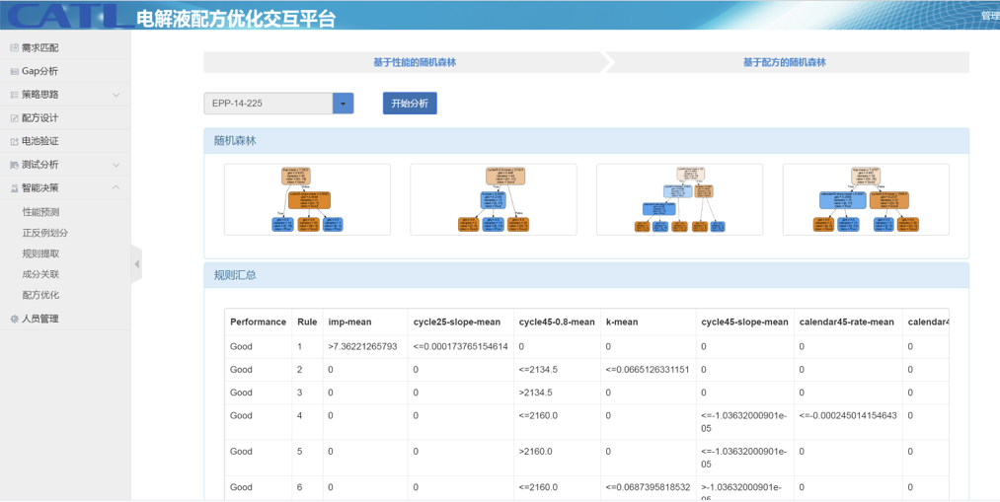
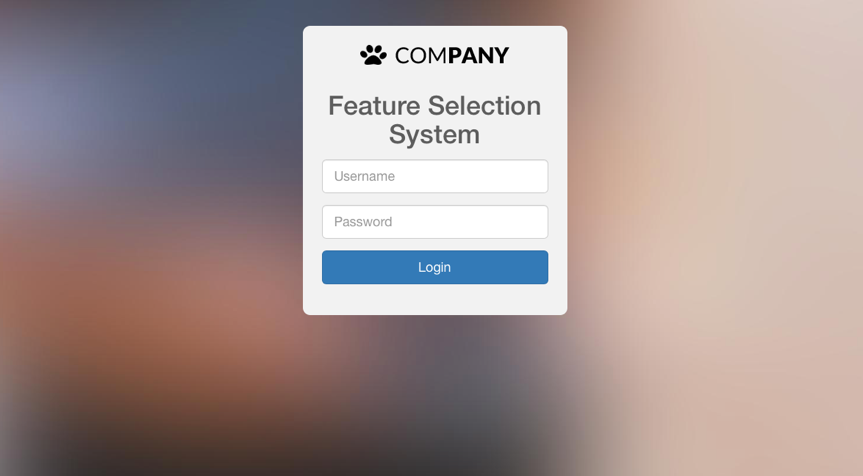

-
- Basic Information.
- Personal Information: Yang Zhengkai / Male
- Education Background: HKU MSc at school
- Common ID: Kr4t0n
- GitHub: www.github.com/Kr4t0n
-
- Research Experience.
Memory Tracing and Attack Analysis (06/2018 - 07/2019)
-
Source Code Webpage
Implement memory tracing based on dynamical analysis.
A Valgrind extended tool is made to manage the allocation and record memory operation.
Post-process of memory report is made, and an attack anlysis is based on it.
Tested with multiple CVE exploitations, and help to investigate the exploitation process and result.

Chatbot - KBot (01/2018 - 04/2019)
-
Source Code
Implement a chatbot based on model - seq2seq.
Preprocessed and trained with dataset Cornell Movie-Dialogs Corpus.
The result of training and chatting process is meaningful.
A UI interface is designed and tested with several short dialogs.
Contemporary Amperex Technology Co. Limited（02/2016 - 06/2017）
-
Lithium Battery Formula Prediction
Data analyst
Conducted lithium battery research for CATL Group, the nation's largest automotive battery company.
Adopted Machine Learning Theory to predict the best formula of Lithium batteries.
Preprocessing and cleansing the formula data based on feature selection system and previous research results.
Combined clustering methods into an ensemble clustering to label the formula data and classified them into 4 grades.
Generated approximate rules by the decision tree algorithm and visualized the results.

Personal Project
-
Estimation of Adjacent Substitution Rate Paper
Used reciprocal empower methods based on Multiple correlation coefficients to give the weight to the attributes of products.
Constructed the prediction model of rate substitution by Support Vector Machines.
Introduced clustering algorithm to make more accurate prediction results on the problem of multi category.
Tested the theory with the authentic data collected from a big market selling PCs in Shanghai, China.
Published a paper in International Conference on Natural Computation, IEEE.
-
Feature Selection System Source Code
Operated the whole system on the server using Python and Flask.
Solved a large number of attribute problems in the prediction of the material.
Integrated four different algorithms and put them into a sieve with four levels (layers).
 -
Interdisciplinary Projects Of Machine Learning And Network Security Source Code
Detected malicious websites through URL checks.
Proposed a learning-based approach to classify websites into three classes: benign, spam, and malicious.
Extracted the features of websites including lexical features, site popularity features and host-based features.
Used two supervised learning algorithms - Random Forest and Support Vector Machine.
-
Prototype Implementation of Network Security Tools
Used C to write the prototype of the attack tool under Linux: port scanner, port redirector, shadow file cracker.
Used C to write the prototype of the defense tool under Linux: all kinds of firewalls, detecting feature string attacks, detecting DDoS attacks.
-
- Internship.
 Hybrid Kinetic Group Ltd.（09/2016 - 04/2017）
Hybrid Kinetic Group Ltd.（09/2016 - 04/2017）-
IT Intern
Set up an SSL VPN to provide online proxy services.
Test an online data-collecting website and worked out the solutions to existing problems.
Provided technical support to office hardware devices and servers.
Established a remote virtual Ubuntu Server.
-
- Skills.
Programming and Software
-
Language
C/C++, Python
-
Database
MySQL, MongoDB
-
Software
IDA Pro, OllyDbg, Cuckoo
Speaking Language
-
English (fluent), Chinese (native)
Other Interests
-
Raspberry Pi
Piano (Grade 10)